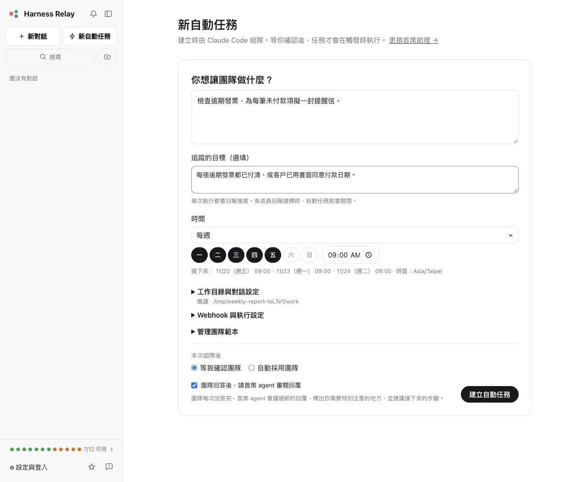
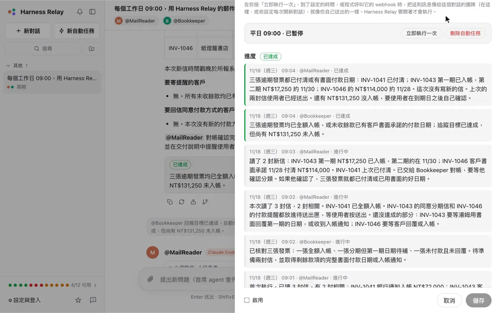

自動任務
自動任務會像你自己送出的一樣，把一則訊息傳給團隊：在你設定的時間、某件事發生時，或你按下執行時。你不在的時候團隊照樣工作，回來再看它做了什麼。
自動任務做什麼
幾個可以交出去的例子：
- 每個平日 09:00：「@Reviewer 看一下昨天合併的 PR，列出可能的風險。」
- 客戶來信時：「整理這封信並擬一份回覆。」
- CI 失敗時：「CI 失敗了，找出原因。」
有兩種方式可以開始：
- 新自動任務：側邊欄 新對話 旁邊、有閃電圖示的按鈕。它會為自動任務開一個對話，首席 agent 再為它的訊息設計團隊。
- 現有對話上方的 自動任務。訊息會交給這個對話的團隊，所以要先確認過團隊。
Harness Relay 只在執行中、而且電腦沒有睡眠時才會送出。每個對話只有一個自動任務。
建立自動任務
- 按側邊欄的 新自動任務，輸入或口述想讓團隊做的事，並加入每次執行時要一起送出的附件。登入 Relay 後會在背景檢查 App 連線。按迴紋針前的常用 App（四個方格的圖示），勾選每次執行想使用的可用服務。無法勾選的 App 會在名稱下方說明原因，建立前也會重新檢查已選項目。若 Slack 需要確認，按檢查 Slack 連線，讓 Codex 讀取你自己的 Slack 個人檔案。需要連結服務時，按管理 App 連線，再按返回自動任務草稿，原來的訊息、附件、排程與仍可使用的 App 都會保留。捲動表單時，建立按鈕固定在表單框內的底部。你可以在訊息中用
@指定成員。 - 需要時填寫 追蹤的目標，再從 時間 選單選擇如何觸發任務。
- 在 工作目錄與對話設定 可以調整資料夾、檔案權限與標題。若要每次開新對話，展開下一項 Webhook 與執行設定。
- 選擇 等我確認團隊 或 自動採用團隊，確認下方的回覆審閱選項，再按 建立自動任務。建立時會開啟對話並組隊；任務會在觸發時執行。
「本次組隊後」上方的 管理團隊範本 可以編輯與新對話共用的範本。

立即執行、暫停、刪除
在它的對話上方按 自動任務，可以再打開這個自動任務。在那裡，立即執行一次 會馬上送出訊息，讓你在第一次到時間前先試試看；取消勾選 啟用 可以暫停而不刪除（不定時的自動任務沒有可以暫停的時間）；刪除自動任務 會移除它。
側邊欄的對話旁出現時鐘，代表它有自動任務（滑過可看下一次的時間）。上次沒有送出，或上次檢查等待的事情失敗時，時鐘會變成琥珀色。它送出的訊息在對話裡標有 自動任務。到時間時團隊還在回覆的話，訊息會排隊等待，就像你那時送出的訊息一樣。
什麼時候執行
| 時間 | 什麼時候送出訊息 |
|---|---|
| 不定時 | 只有按 立即執行一次，或程式呼叫它的 webhook 時。適合偶爾自己啟動的工作。 |
| 一次 | 某個日期與時間。 |
| 每天 | 每天的某個時間。 |
| 每週 | 你選的星期幾的某個時間。 |
| 每隔幾小時 | 每隔幾個小時，從你設定時算起。 |
| 當某件事發生時 | 它在等的事有了新動靜（見下方）。 |
儲存前會顯示接下來三次的時間，以自動任務的時區計算。
當某件事發生時
在 要等的事 選擇由什麼啟動它。Harness Relay 會自己每隔幾分鐘檢查一次：
- 收到新郵件：你的某個郵件帳號、你選的資料夾（預設是收件匣），也可以只看某個寄件者，或主旨含有某些字的郵件。郵件伺服器能在收到郵件時馬上通知的話（Gmail 和 iCloud 都可以），幾秒內就會啟動。
- 行程即將開始：你的某個行事曆，在每個行程開始前幾分鐘。
- GitHub 上有新的 pull request 或 CI 失敗：你指定的某個儲存庫，用你自己已登入的 GitHub CLI（
gh）檢查。 - 工作目錄中的檔案出現或變動：符合某個樣式的檔案，例如
reports/*.csv。團隊自己在那裡改動的檔案不會再啟動它。
郵件帳號與行事曆來自設定 → App 與工具 → 常用 App 裡的郵件和行事曆（見工具）。第一次檢查只會記下已經在的東西：之後新來的才會啟動自動任務，並附上新東西的清單給 agent 讀。再等一件事 可以多等一件事，最多五件，任何一件發生都會啟動它。立即檢查 會馬上檢查並說明找到什麼。檢查失敗時（例如密碼錯誤），自動任務會說明原因。
沒人看著的時候
自動任務可能在你不在時執行，所以有三個選項決定那時會怎樣：
- 權限範圍以外的動作
- 預設是 自動拒絕：agent 想做的、超出對話權限的事都會被拒絕，但你已在這個對話中一律允許的除外；agent 會被告知並改用其他方式，對話中也會顯示拒絕了什麼。選 詢問我 則和平常一樣在對話中詢問你，agent 會等你回來，每一回合最多等一天。
- 錯過的時間
- Harness Relay 關閉或電腦睡眠期間錯過的時間，可以 略過 並在對話中留下說明，或在 Harness Relay 再次執行時 開啟後補送一次，錯過幾次都只補一次。
- 每次開新對話
- 不在這個對話送出，而是每次開一個新對話，沿用同樣的團隊與設定。每次都從乾淨的狀態開始，這個對話也不會越來越長；但 agent 不記得前幾次做過什麼，要延續的事，請 agent 寫進工作目錄的檔案。
對話有團隊檢查時，沒人看著的那一輪若沒通過，就算那一次失敗，自動任務上會顯示，不會等你。新的自動任務一開始會帶著你的團隊檢查預設。
有完全存取權限時，自動任務的 agent 不必詢問就能執行任何指令，而且沒有人在旁邊看著。有自動任務的對話擁有完全存取權限時，團隊設定會提醒你。見權限與核准。
追蹤目標
追蹤的目標 用你自己的話寫下怎樣算完成，例如「大家都確認聚餐的時間和地點」。這樣自動任務就會跨次、跨天地追蹤這件事：
- 每次執行時，agent 都會看到目標和前幾次回報的進度，並在回覆最後說明目前進度。這會在回覆中顯示成一張小小的 進度 卡片，也列在自動任務的 進度 裡。
- 有 agent 回報目標已達成時，自動任務會自己關閉，並在對話中留下說明。
- 有 agent 回報卡住了，對話會標為 目標卡住了 並通知你，直到之後的回覆不再這麼說。
- 一次執行的回覆全部失敗時（例如碰到用量上限），同一次執行會在 5、30、120 分鐘後重試。

讓程式啟動它
儲存自動任務後，可以在對話裡的 讓其他程式啟動它（Webhook） 裡設定 webhook。webhook 是一個網址，這台電腦上的程式呼叫它，就能立刻送出自動任務的訊息，例如 git hook、在這台電腦上執行的 CI runner 或腳本。自動任務的時間關閉時也能用。
- 在 新自動任務 頁面展開 Webhook 與執行設定，勾選 同時建立 webhook；已經儲存的自動任務，則按 建立 webhook。
- 程式呼叫時要帶上 webhook 的權杖。權杖只會顯示一次，並附上呼叫的範例：請當下複製。換一個新的權杖 會取代它，移除 webhook 會拿掉 webhook。
- 程式送來的內容會附在訊息後面，顯示在 Webhook 傳來的內容 下，agent 會把它當成資料來讀，絕不當成指示。
Harness Relay 只接受這台電腦上的程式呼叫。要轉送網路上的事件，請在這台電腦上執行一個程式接收它們，再呼叫這個 webhook。